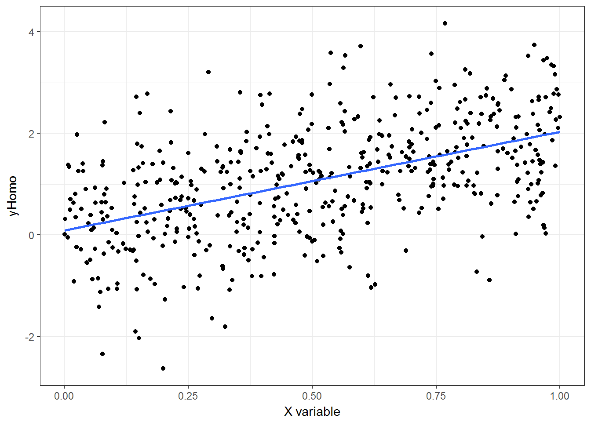
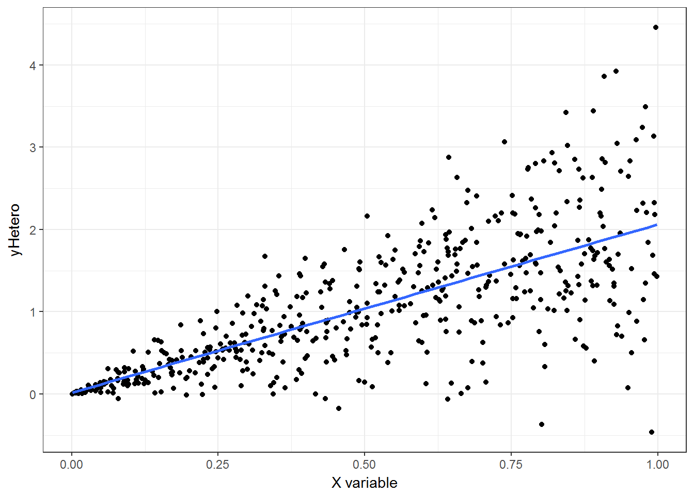
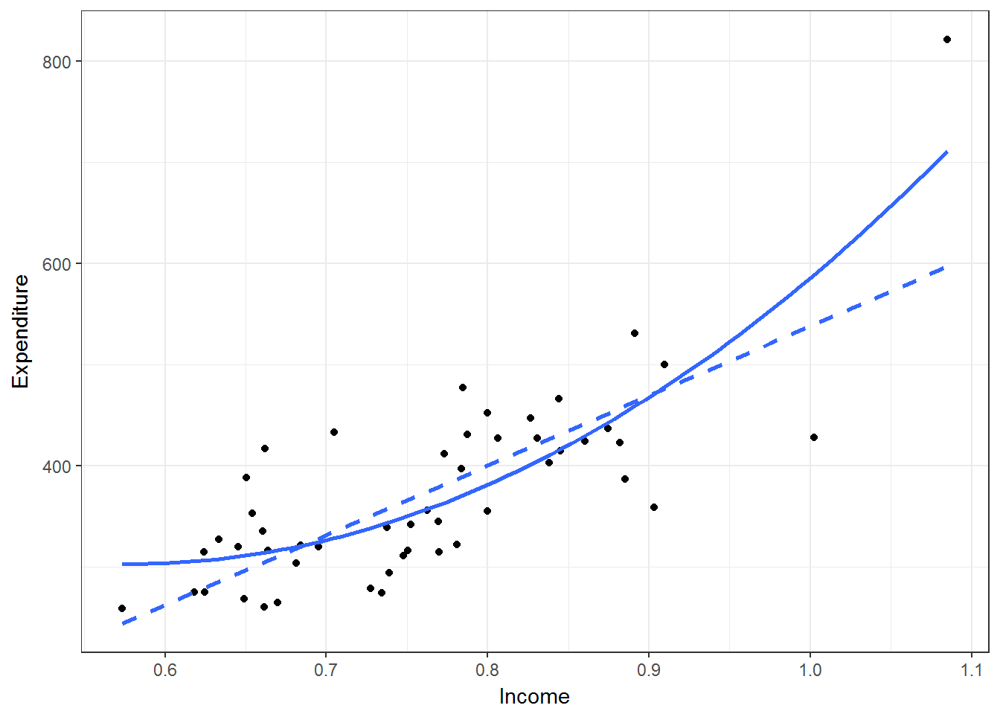

Chapter 3 Heteroskedastic & Cluster Robust Standard Errors
3.1 Introduction
In this chapter we are evaluating R’s capability to compute different kinds of standard errors. Like with many things, R has extensive flexibility here but can be daunting when you want a quick option. To bring this down to earth, I lay out the background, provide practical recommendations, user-written commands and benchmark to STATA.
3.1.1 Packages to use
R version 3.3.2 (2016-10-31) Platform: x86_64-w64-mingw32/x64 (64-bit) Running under: Windows 10 x64 (build 14393) attached base packages: [1] stats graphics grDevices utils datasets base other attached packages: [1] knitr_1.15.17 boot_1.3-18 lmtest_0.9-35 [4] zoo_1.7-14 sandwich_2.3-4 Scotty_0.0.0.9000 [7] devtools_1.12.0 Hmisc_4.0-2 Formula_1.2-1 [10] survival_2.41-2 lattice_0.20-35 dplyr_0.5.0 [13] purrr_0.2.2 readr_1.1.0 tidyr_0.6.1 [16] tibble_1.2 ggplot2_2.2.1 tidyverse_1.1.1
“Scotty” is my own package. “tidyverse” is Wickam et al. general suite of packages/commands to work with R. “Hmisc” is Frank Harrel’s miscellaneous commands, many of which are quite useful. “sandwich”, “lmtest” and “boot” are specifically relevant to this chapter in order to compute various standard errors (SE).
3.2 Test data
To test and demonstrate code and assumptions are correct. I utilize the “PublicSchools” dataset in the “sandwich” package. This dataset is well-described in peer-reviewed research, and standard text books (Table 14.1 in Green [1993]).(Greene 1993, Zeileis (2004), Zeileis (2006), (“Cribari-Neto F” 2004)) The data comes originally from a 1979 report on per capita public school expenditures and per capita income by state from the U.S. Dept. of Commerce.
## Load public schools data, omit NA in Wisconsin, scale income and make squared Income term:
data(PublicSchools)
df <- as_tibble(PublicSchools %>% na.omit() %>% mutate(Income = Income*1e-04)) %>% mutate(Income2 = Income^2)
head(df)## # A tibble: 6 × 3
## Expenditure Income Income2
## <int> <dbl> <dbl>
## 1 275 0.6247 0.3902501
## 2 821 1.0851 1.1774420
## 3 339 0.7374 0.5437588
## 4 275 0.6183 0.3822949
## 5 387 0.8850 0.7832250
## 6 452 0.8001 0.6401600se_results <- as_tibble(matrix(nrow=4,ncol=6))
names(se_results) <- c("method","vcov Matrix", "Income_Beta","Income_SE","Income2_Beta","Income2_SE")
method <- c("manual","lm","manual","HC0")
#,"HC1","HC2","HC3","HC4")
type <- c("iid","iid","White","White (dfc)")
for (i in 1:nrow(se_results)) {
se_results[i,1] <- method[i]
se_results[i,2] <- type[i]
}3.3 Linear Regression Model
First, I start with the classical ordinary least squares framework. \[y_i = X_i\beta + u_{i} \quad \textrm{where} \quad i = 1,..,n\]
Where \(y\) is a dependent variable, \(X\) is a vector of regressors (i.e. independent variables) with \(k\)-dimensions,\(\beta\) is a vector of the coefficients for \(X\), and \(u\) is the residual error term. In matrix notation often simply as: \(y= X\beta+u\).
Under normal assumptions, the mean of \(u_i\) (that is the residual of a given observation \(i\)) should be zero and possess a constant variance across all subsets of \(i\). The second assumption is my focus here, which is often incorrect in empirical research.
3.4 Estimation of regression parameters and variance
Typically in empirical research you are interested in estimating some or all parameter coefficients, and a measure of variance or precision on that parameter. With this most empiricists will make statement along the lines of “A 1-unit change in \(x\) produces a \(\beta\)-unit change in \(y\), and a null hypothesis of \(\beta\)=0 is rejected with 95% confidence”.
In our example, assume we want to model per capita expenditures regressed on income.
First, I demonstrate how to estimate your parameter coefficient, \(\beta_1\) the coefficient on income and the square root of the variance, \(\sigma\).
3.4.1 Manually computed beta parameters
R basically computes the regression coefficients with the standard \((\textbf{X}'\textbf{X})^{-1}\textbf{X}'\textbf{y}\) i.e. the coefficient is a function of X and y.
You can do this manually like so:
Y = as.matrix(df$Expenditure)
X = as.matrix(cbind(1,df$Income, df$Income2)) #Add one for intercept
beta = solve(t(X) %*% X) %*% (t(X) %*% Y)
rownames(beta) <- c("Int","Income","Income2")
colnames(beta) <- c("Beta")
se_results[1,3] <- beta[2,1]
se_results[1,5] <- beta[3,1]
se_results ## # A tibble: 4 × 6
## method `vcov Matrix` Income_Beta Income_SE Income2_Beta Income2_SE
## <chr> <chr> <dbl> <lgl> <dbl> <lgl>
## 1 manual iid -1834.203 NA 1587.042 NA
## 2 lm iid NA NA NA NA
## 3 manual White NA NA NA NA
## 4 HC0 White (dfc) NA NA NA NA3.4.2 Manually computed standard errors
In a regression framework you compute standard errors by taking the square root of the diagonal elements of the variance-covariance matrix. As defined above, consider \(u\) is normally distributied with mean=0, and standard deviation, \(\sigma^2I\). Where \(\sigma^2\) is the variance.
First, define the expectation of the variance of \(\beta\) conditional on X.
\[\textrm{Var}[\hat{\mathbf{\beta}}|\textbf{X}] = (\textbf{X}'\textbf{X})^{-1}(\textbf{X}' \mathbf{\sigma^2_{u}}\mathbf{I}\textbf{X}) (\textbf{X}'\textbf{X})^{-1}\]
If you assume that \(u\) is indepedent (i.e. orthogonal) to \(\beta\), and identically distributed across subpopulations of \(\beta\). The variance of a random vector X and non-random matrix = matrix * Var(X) * matrix’, can be expressed as: \[\textrm{Var}[\hat{\mathbf{\beta}}|\textbf{X}] = \mathbf{\sigma^2_{u}}(\textbf{X}'\textbf{X})^{-1}\]
\[E[{uu}'|\textbf{X}] = \mathbf{\Sigma_{u}}\]
Assuming \(\sigma_u^2\) is fixed but unknown, a given random sample’s variance, \(s^2\), can be estimated:
Equation 5. Standard Error
\[s^2 = \frac{\sum_{i=1}^n e_i^2}{n-k}\]
Where \(e\) are the squared residuals, \(n\) is the sample size, and \(k\) are the number of regressors.
With this information the standard errors above can be replicated manually like so:
Y = as.matrix(df$Expenditure) #Dependent variable
X = as.matrix(cbind(1,df$Income, df$Income2)) #Design matrix, add one for intercept
beta = solve(t(X) %*% X) %*% (t(X) %*% Y) #Solve for beta as above
n <- dim(X)[1] # number of obs
k <- dim(X)[2] # n of predictors
# calculate stan errs as eq in the above
SigmaSq <- sum((Y - X%*%beta)^2)/(n-k) # (sum residuals)^2 / (degree of freedom correction) i.e. estimate of sigma-squared
vcovMat <- SigmaSq*chol2inv(chol(t(X)%*%X)) # variance covariance matrix
StdErr <- sqrt(diag(vcovMat)) #sq root of diagonal
se_results[1,4] <- StdErr[2]
se_results[1,6] <- StdErr[3]
se_results## # A tibble: 4 × 6
## method `vcov Matrix` Income_Beta Income_SE Income2_Beta Income2_SE
## <chr> <chr> <dbl> <dbl> <dbl> <dbl>
## 1 manual iid -1834.203 828.9855 1587.042 519.0768
## 2 lm iid NA NA NA NA
## 3 manual White NA NA NA NA
## 4 HC0 White (dfc) NA NA NA NA3.4.3 R lm function
To confirm the above we can compute the same with the the lm function
m1 <- lm(Expenditure ~ Income + Income2, data = df)
se_results[2,3] <- coeftest(m1)[2,1]
se_results[2,4] <- coeftest(m1)[2,2]
se_results[2,5] <- coeftest(m1)[3,1]
se_results[2,6] <- coeftest(m1)[3,2]
se_results## # A tibble: 4 × 6
## method `vcov Matrix` Income_Beta Income_SE Income2_Beta Income2_SE
## <chr> <chr> <dbl> <dbl> <dbl> <dbl>
## 1 manual iid -1834.203 828.9855 1587.042 519.0768
## 2 lm iid -1834.203 828.9855 1587.042 519.0768
## 3 manual White NA NA NA NA
## 4 HC0 White (dfc) NA NA NA NAThe estimates are identical. However the critical assumption here of \(u\) being “iid”, can often be wrong in empirical research. In the following, I broadly define these concepts.
3.5 Heteroskedascity
Heteroskedascity in this context refers to a random variable where a given subset of a sample will have different variability compared with others. Variability being variance or some other measure of dispersion. In constrast homoskedascity is when variance is constant across these subpopulations (Figure 1).
#Generate Data
x <- runif(500)
yHomo <- 2*x + rnorm(500)
yHetero <- 2*x + x*rnorm(500)
df2 <- as.data.frame(cbind(x, yHomo, yHetero))
#Scatter and Fitted Line
ggplot(data=df2, aes(x=x, y=yHomo)) +
geom_point() +
geom_smooth(method='lm', se=F) +
xlab("X variable") +
theme_bw()
Figure 1. Example of homoskedascity. Note how data points appear to be randomly scattered around line of best fit, and that the dispersion appears of the points constant across the range of X variable.
#Scatter and Fitted Line
ggplot(data=df2, aes(x=x, y=yHetero)) +
geom_point() +
geom_smooth(method='lm', se=F) +
xlab("X variable") +
theme_bw()
Figure 2. Example of heteroskedascity. See how the dispersion of the points appears greater as X increases.
Under the assumption of independent and identically distributed errors (homoskedascity), Eq. 3 is simplified to eq. 4 (transpose matrix, using diagonal elements).
3.5.1 Heteroskedascity in income data
#Scatter and Fitted Line
ggplot(data=df, aes(x=Income, y=Expenditure)) +
geom_point() +
geom_smooth(method='lm', formula=y ~ x + poly(x,2), se=F) +
geom_smooth(method='lm', linetype=2, se=F) +
xlab("Income") +
theme_bw()## Warning in predict.lm(model, newdata = data.frame(x = xseq), se.fit = se, :
## prediction from a rank-deficient fit may be misleading
In our “real-world” small sample of data a visual representation of data can be challenging to draw conclusions from. We see there is an outlier (“Alaska”). However, it is difficult to judge overall dispersion with either a squared term [solid line] or a linear term [dashed line].
3.6 “White” heteroskedastic consistent errors
In the setting of heteroskedascity, the parameters are consistent but inefficient and also the variance-covariance matrix is inconsistent (i.e. biased).(White 1980) The assumption of the residuals \(u\) being identically distributed does not hold, and the diagonal matrix is invalid. However, an alternative variance-covariance matrix can be computed which is heteroskedastic consistent.(White 1980)
With the “robust” approach proposed by White et al., you assume the variance of the residual is estimated as a diagonal matrix of each squared residual (vs. average above with \(s^2\)). Each j-th row-column element is \(\hat{u}_{j}^{2}\) in the diagonal terms of \({\Sigma_{u}}\).
The full equation is:
3.6.1 Manual estimator
u <- matrix(resid(m1)) # residuals from model object
meat1 <- t(X) %*% diag(diag(crossprod(t(u)))) %*% X # Sigma is a diagonal with u^2 as elements
dfc <- n/(n-k) # degrees of freedom adjust
se <- sqrt(dfc*diag(solve(crossprod(X)) %*% meat1 %*% solve(crossprod(X))))
se_results[3,4] <- se[2]
se_results[3,6] <- se[3]
se_results## # A tibble: 4 × 6
## method `vcov Matrix` Income_Beta Income_SE Income2_Beta Income2_SE
## <chr> <chr> <dbl> <dbl> <dbl> <dbl>
## 1 manual iid -1834.203 828.9855 1587.042 519.0768
## 2 lm iid -1834.203 828.9855 1587.042 519.0768
## 3 manual White NA 1282.1010 NA 856.0721
## 4 HC0 White (dfc) NA NA NA NAYou will find these “White” or robust standard errors are consistent with the second Peterson table.(Petersen 2009) They are also consistent with STATA’s robust option. It is not technically the same as the White paper because STATA does a degree of freedom adjustment for small sample size.
3.6.2 R standard function
Using the already written commands you can specify “White” standard errors with the vcovHC function in the sandwich package.(Zeileis 2006) You can report correct standard errors like below with vcovHC option in function coeftest.
vcovHC has several types available. The general formula for the var-cov matrix is: \((X'X)^{-1} X' Omega X (X'X)^{-1}\).
The specification of \(Omega\) is determined by the type= option.
type="cons" \(\omega_i = \sigma^2\) Constant variance
type=HC0 \(\omega_i = \mu^2_i\) the White variance-covariance matrix
type=HC1 \(\omega_i = \frac{n}{n-k}\mu^2_i\) Small sample correction (STATA).
type=HC2 \(\omega_i = \frac{\mu^2_i}{1-h_i}\)
type=HC3 \(\omega_i = \frac{\mu^2_i}{(1-h_i)^{2}}\)
type=HC4 \(\omega_i = \frac{\mu^2_i}{(1-h_i)^{\delta_i}}\)
Where \(h_i = H_{ii}\) are the diagonal elements of the hat matrix and \(\delta_i = min({4 }, {h_i}{h¯})\). The documentation for the sandwich package recommends HC4 based on recent literature.(“Cribari-Neto F” 2004)
## Different variance-covariance options with vcovHC## type = cons##
## t test of coefficients:
##
## Estimate Std. Error t value Pr(>|t|)
## (Intercept) 832.91 327.29 2.5449 0.014275 *
## Income -1834.20 828.99 -2.2126 0.031820 *
## Income2 1587.04 519.08 3.0574 0.003677 **
## ---
## Signif. codes: 0 '***' 0.001 '**' 0.01 '*' 0.05 '.' 0.1 ' ' 1## type = HC0##
## t test of coefficients:
##
## Estimate Std. Error t value Pr(>|t|)
## (Intercept) 832.91 460.89 1.8072 0.07714 .
## Income -1834.20 1243.04 -1.4756 0.14673
## Income2 1587.04 829.99 1.9121 0.06197 .
## ---
## Signif. codes: 0 '***' 0.001 '**' 0.01 '*' 0.05 '.' 0.1 ' ' 1## type = HC1##
## t test of coefficients:
##
## Estimate Std. Error t value Pr(>|t|)
## (Intercept) 832.91 475.37 1.7521 0.08627 .
## Income -1834.20 1282.10 -1.4306 0.15915
## Income2 1587.04 856.07 1.8539 0.07004 .
## ---
## Signif. codes: 0 '***' 0.001 '**' 0.01 '*' 0.05 '.' 0.1 ' ' 1## type = HC2,##
## t test of coefficients:
##
## Estimate Std. Error t value Pr(>|t|)
## (Intercept) 832.91 688.48 1.2098 0.2324
## Income -1834.20 1866.41 -0.9827 0.3308
## Income2 1587.04 1250.15 1.2695 0.2105## type = HC3,##
## t test of coefficients:
##
## Estimate Std. Error t value Pr(>|t|)
## (Intercept) 832.91 1095.00 0.7607 0.4507
## Income -1834.20 2975.41 -0.6165 0.5406
## Income2 1587.04 1995.24 0.7954 0.4304## type = HC4,##
## t test of coefficients:
##
## Estimate Std. Error t value Pr(>|t|)
## (Intercept) 832.91 3008.01 0.2769 0.7831
## Income -1834.20 8183.19 -0.2241 0.8236
## Income2 1587.04 5488.93 0.2891 0.7737Lifehack: Rather than use the coeftest function you can also directly modify the standard errors in the regression summary object.
s <- summary(m1)
s$coefficients[, 2] <- sqrt(diag(vcovHC(m1, type="HC1")))
s##
## Call:
## lm(formula = Expenditure ~ Income + Income2, data = df)
##
## Residuals:
## Min 1Q Median 3Q Max
## -160.709 -36.896 -4.551 37.290 109.729
##
## Coefficients:
## Estimate Std. Error t value Pr(>|t|)
## (Intercept) 832.9 475.4 2.545 0.01428 *
## Income -1834.2 1282.1 -2.213 0.03182 *
## Income2 1587.0 856.1 3.057 0.00368 **
## ---
## Signif. codes: 0 '***' 0.001 '**' 0.01 '*' 0.05 '.' 0.1 ' ' 1
##
## Residual standard error: 56.68 on 47 degrees of freedom
## Multiple R-squared: 0.6553, Adjusted R-squared: 0.6407
## F-statistic: 44.68 on 2 and 47 DF, p-value: 1.345e-113.7 Acknowledgements
This chapter is heavily adapted from several StackExchange and other blog posts. See:
http://www.richard-bluhm.com/clustered-ses-in-r-and-stata-2/
https://sites.google.com/site/waynelinchang/r-code
https://thetarzan.wordpress.com/2011/05/28/heteroskedasticity-robust-and-clustered-standard-errors-in-r/
3.8 Bibliography
References
Greene, William H. 1993. Econometric Analysis. New York; London: Macmillan Publishing Co Inc.
Zeileis, Achim. 2004. “Econometric Computing with Hc and Hac Covariance Matrix Estimators.” Journal of Statistical Software 11 (10): 1–16. https://www.jstatsoft.org/article/view/v011i10.
Zeileis, Achim. 2006. “Object-Oriented Computation of Sandwich Estimators.” Journal of Statistical Software 16 (9): 1–16. http://www.jstatsoft.org/v16/i09/.
“Cribari-Neto F.” 2004. Computational Statistics & Data Analysis 45.
White, Halbert. 1980. “A Heteroskedasticity-Consistent Covariance Matrix Estimator and a Direct Test for Heteroskedasticity.” Econometrika 48 (4): 817–88.
Petersen, MA. 2009. “Estimating Standard Errors in Finance Panel Data Sets: Comparing Approaches.” Review of Financial Studies 22: 435–80.